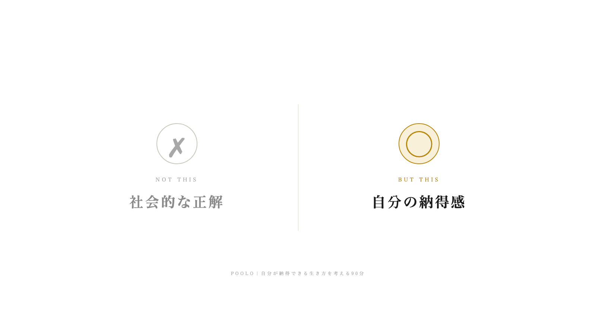
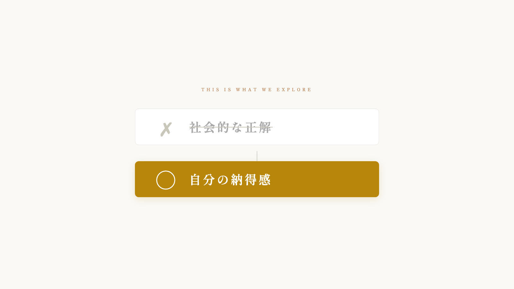
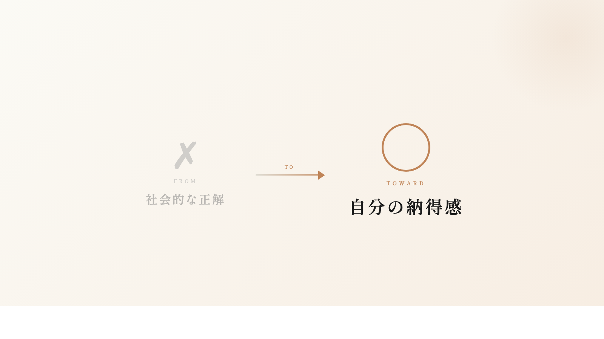

「このイベントで向き合うこと」の直下に入れる、シンプルな対比ビジュアル。
3案それぞれ構図違い。配置位置・用途は共通（記事中央の横長バナー）。
白背景に縦罫線を挟んだ左右対比。バッジ円アイコンで「✗」「◯」を丸く収め、文字サイズを揃えて静的な均衡を出す。等価対比・静謐志向。

上に「社会的な正解」を取り消し線で示し、下に「自分の納得感」をゴールドのバーで強調。視線誘導が上→下に流れ、「否定→肯定」の関係性が最も明快。

左の「社会的な正解」から右の「自分の納得感」へ、矢印で遷移を示す。薄いグラデーション背景で温度感もプラス。「FROM→TOWARD」の動きを伝えたい場合に最適。
